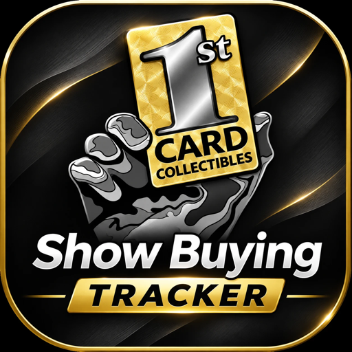

Show Buying Tracker
1st Card Collectibles
Open Tracker
Put it on your home screen
iPhone (in Safari):
- Tap the Share button (square with arrow).
- Tap Add to Home Screen, then Add.
Android (in Chrome):
- Tap the ⋮ menu.
- Tap Add to Home screen, then Add.